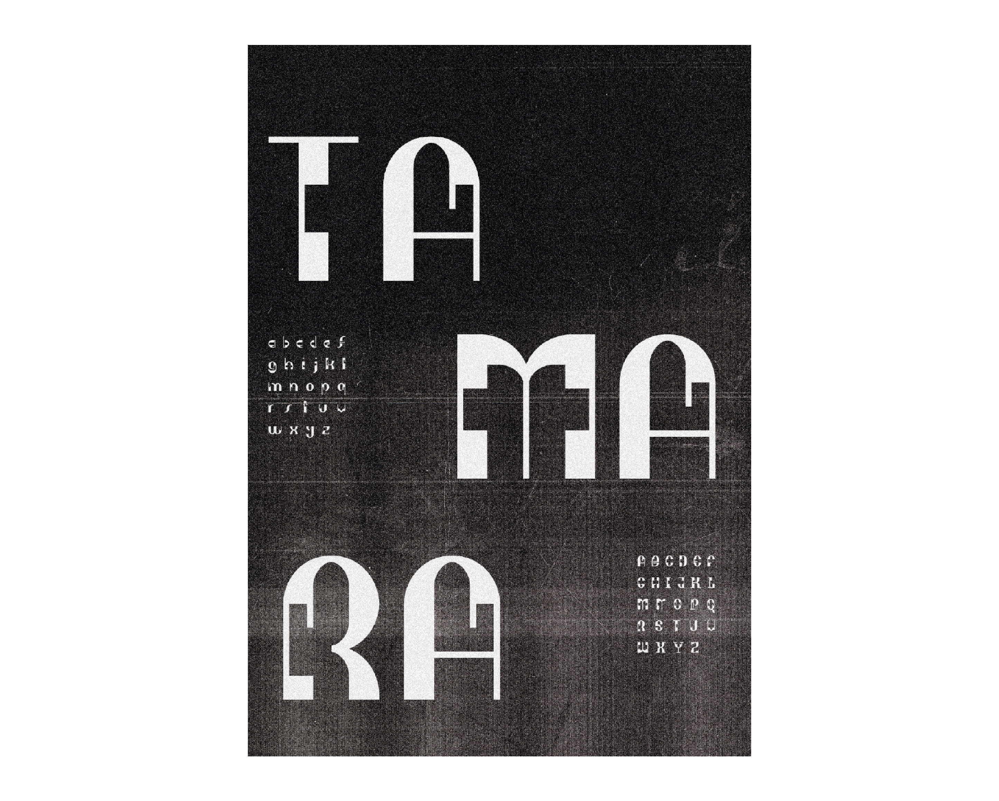
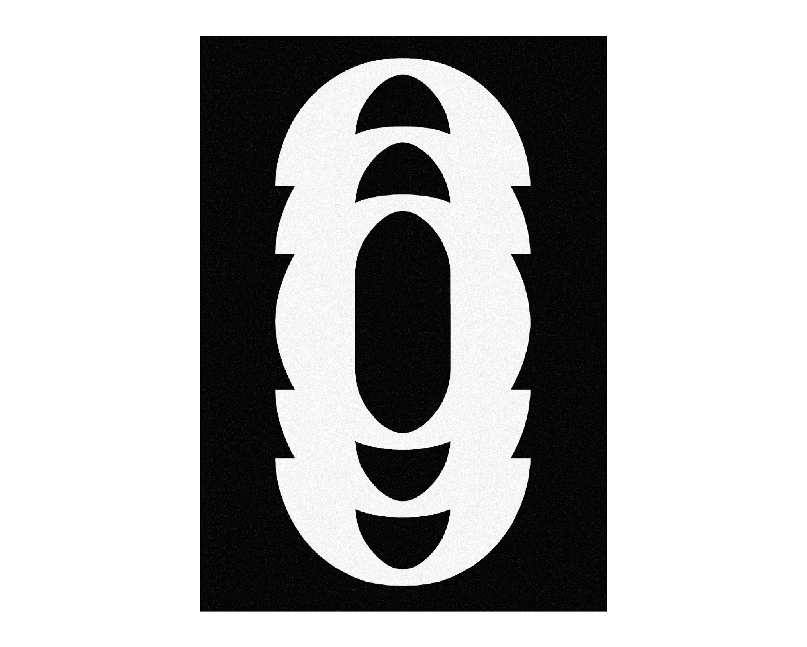
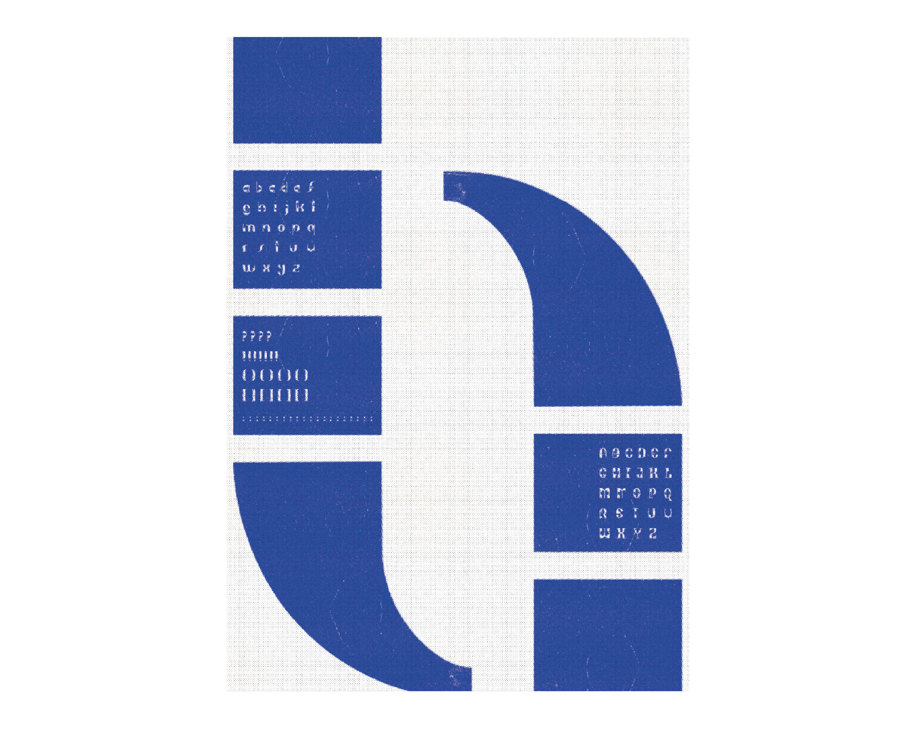
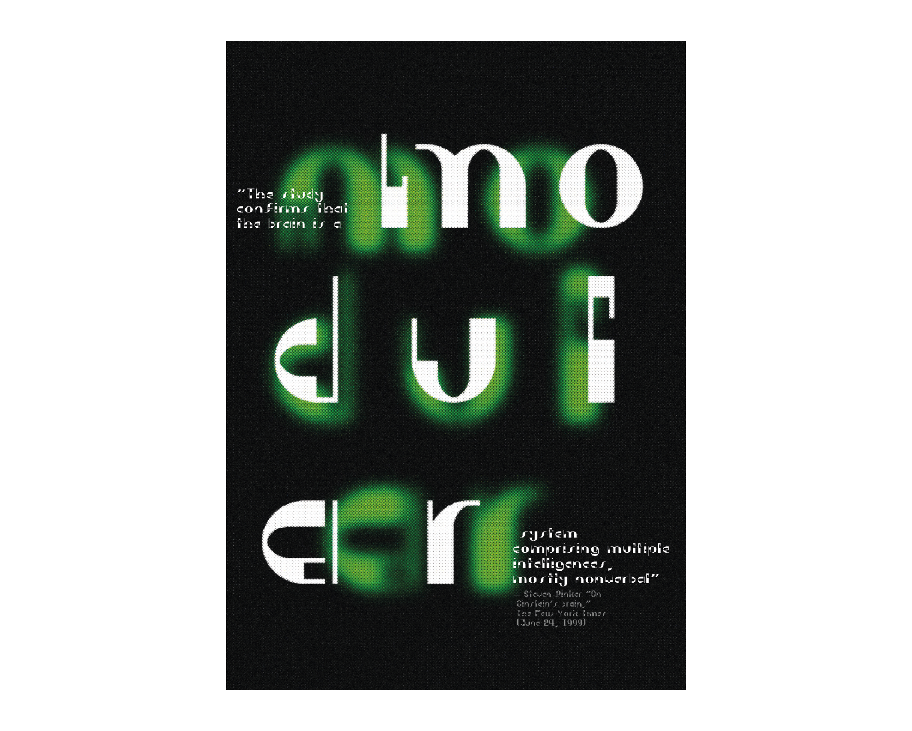

Tamara
Typography
Graphic Design
2022


CONTEXT
Academic Project — MDM
Collaboration with Francisca Calisto
ADVISED BY
Artur Rebelo, João Bicker
Tamara is a modular letterpress made up of modules contained in signs, plaques and inscriptions from the streets of Coimbra.
The modules together, with large contrasts on their stems, reminded us of the Art Deco style, hence its name Tamara which pays homage to Tamara de Lempicka, a Polish Art Deco painter.
TOOLS/LANGUAGES
Adobe Illustrator, InDesign, After Effects




